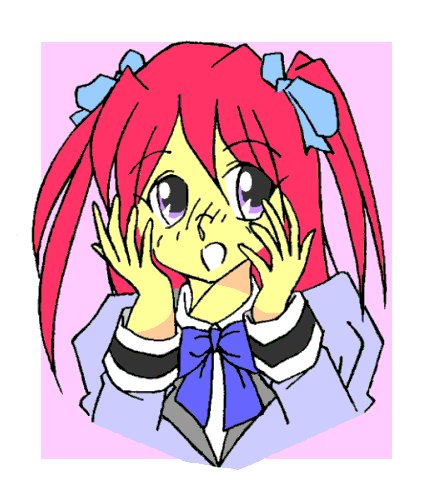
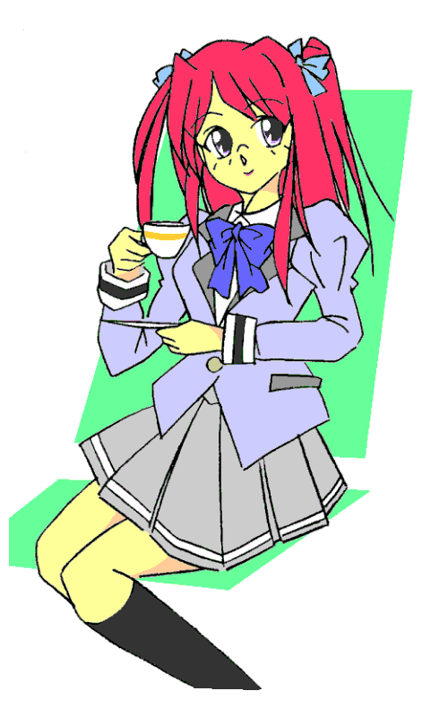

２０１３年。４月。
私立・鳥栖学園。
創立６３年の由緒ある学園だ。
四月になり、新入生を迎え入れていた。
その一人、燕裕次郎（つばめゆうじろう）。
なんだか大物スターのような名前だが、まだあどけなさの残る少年だ。
身長は１６０にわずか１センチ届かず。
女子でもおかしくない背丈だ。
顔も童顔というより女顔。
短髪でも丸顔故そう見える。
声もまだ高い。
体毛も薄いので女性ホルモンが多めなのかもしない。
そんなことを考えたこともある。
この容姿が大のコンプレックスだった。
この学校の制服。正統派の黒い詰襟の学生服も彼が着ると「女子の男装」に見える。
現在は放課後で下校中。
一階でいくつかの部活から勧誘があるが、すべて意中のものではない。
彼はいつも考える。
『自分を変えたい』
そんな思いを強く抱いていた。
だから部活も挑戦的に選択しようとしていた。
身長はないがバレーとかバスケット。
文化系ならなるべくしたことのないようなもの。
その中でも本命といえる部活が彼にはあった。
（演劇部なんてのもいいかもな。文字通り別人になれる）
だが過日行われたオリエンテーションを参考にする限り、この学校には演劇部はない。
（ならどうしたものか）
声をかけてくる運動部の誘いも耳に入らず、とぼとぼと歩く。
「そこの君。自分を変えて見たくない？」
まさに正門を出たところで、自分の思いと同じことを他者に言われた。
どこだ？ 女の声だった。
あたりを見回すと、すぐに一人の少女が目についた。
金髪だった。ショートカットでさらされた右の耳たぶにはピアスが。
制服こそちゃんとスクールブラウスの上からベスト。下には青いチェックのプリーツスカート。ジャケットは紺色のブレザーと、オーソドックスな制服である。……ただし原形をとどめていればの話だが。
ところどころにバッヂがつけられ、一部にはアップリケまで。
スカートは足を目一杯露出するように穿いていた。
顔には化粧。典型的な「ギャル」だった。
「…………」
引き気味の裕次郎に彼女は軽いノリで声をかける。
「はぁい。アタシ烏丸美奈子（からすまみなこ）。二年生よ。あなた新入生？」
「は、はい。（１年）Ｃ組の燕裕次郎です」
裕次郎も「先輩」相手ということで無下には扱わず返答する。
「きゃーっ。かっこいい名前ねぇ」
静かにしゃべる分にはきれいだが、張り上げると若干ハスキーさが出てくる声だった。
「それで裕次郎くん。自分を変えて見たくない？」
また言われた。
その言葉が胸に響き、話を聞く気になる裕次郎。
「勧誘ですか？ どこの部ですか？」
「トリックスター部よ」
「ああ。あの」
別にうわさは聞いていない。
ただオリエンテーションで物腰柔らかな女生徒が口にした名前が変わっていたので印象に残っていた。
「なにをする部活ですか？」
確かに名前だけだとわからない。
「言ったでしょ」
美奈子はそこで演出のつもりかくるっと一回転した。
「『自分を変える部』だって」
自分を変える。
まさにその思いにとらわれていた裕次郎は、誘われるまま美奈子についていく。
これが今後の高校生活どころか、人生すら変えると知らないままに。
とりすた
〜いかにも第一話のようなお話〜
作：城弾
文科系の部室が立ち並ぶエリアに連れて行かれる。
（随分はずれのほうに来ちゃったな）
不安になる裕次郎。
「ここよ。入って」
明るい声で言う美奈子。扉を開ける。
「はぁ」
まだ不安だがとりあえずはついて入る。
中は意外に広く、畳の部屋でいうなら１０畳くらい。
これまた意外に日当たりはよい。ただし四月の夕方でもう薄暗く照明がついている。
壁にはスライド式の本棚があり、それを本が埋め尽くしていた。
中央に大きなテーブルがある。椅子はパイプ椅子だ。
その上座に当たる位置に栗色のソフトに波打つ髪を持つ女生徒が、ティーカップを口に着けていた。
匂い。そして傍らのティーポットから察するに紅茶のようだ。
壁にあるハンガーにブレザーがかけられている。
栗色の髪の少女はベストを付けずカーディガンを羽織っている。
「部長。新入部員連れてきました」
彼女に向かって、美奈子が明るく声をかけた。
「まぁ。すごいわ。美奈子ちゃん」
見た目同様やんわりとした声だった。
その少女は立ち上がると、裕次郎に近寄って手を取った。
オリエンテーションでこの部を紹介していた女子生徒……美少女というより大人の女性。
その色香に裕次郎は、思わずのぼせそうになる。
「ようこそ。トリックスター部へ。わたしは部長の鷲尾陽子（わしおようこ）よ。よろしくね」
そのまま抱きしめて、胸の弾力を知らしめる。
甘い香りも手伝って、裕次郎は訳が分からなくなった。
二分ほど抱きしめられていただろうか。
さすがに裕次郎は解放を望み、その旨を伝えた。
「あら。ごめんなさい私ったら。つい嬉しくて」
「これで廃部の危機を免れたわけですしね」
美奈子が相槌を打つ。
「廃部？」
「ええ。見てのとおりうちの部活。定員割れを起こしているの。勧誘期間中に四人に達しなかったら同好会に格下げされちゃうところだったのよ」
「僕で四人？ もう一人は？」
「……うっ」
裕次郎のその言葉に、何故か表情が強張る美奈子。ギャルな見た目と裏腹に、あまり図太い性格ではないようだ。
「……あー。そこにいるんだけどさ」
言われた方を見ると確かにいた。もうひとりの部員は部屋の片隅で本を読んでいた。
「え？」
没頭して本の世界に入り浸り、現実世界の騒ぎに気が付かなかったというところか。
本を読んでいた彼女は顔を上げた。
黒髪を二つの三つ編みにしている。そして黒縁の眼鏡。絵にかいたような「文学少女」だ。
顔は美人といえる……しかしその胸元が大迫力（のちにＥカップと分かる）。
（部長さんもすごかったけど、この人だとさらに上かも……身長が低い分、なおさら）
ついそんなことを考えてしまう裕次郎だった。
「あ……」
本の世界から現実世界へと帰りきれていないようだ。「文学少女」は寝ぼけたような目で三人を見つめた。
「彼女は白鳥天音（しらとりあまね）ちゃん。二年生で本を読むのが好きな女の子よ」
「よ、よろしくです。白鳥先輩」
いちおう挨拶をする。だが天音は裕次郎を見ていない。
「美奈子……この子は誰？」
きれいな声だが迫力を感じさせた。
わずかに腰を浮かせてしまう。
「し、新入部員だよ。燕ちゃんっていうの」
知り合ったばかりなのに苗字にちゃんづけである。
それはさておき、美奈子は何故か気圧されていた。文学少女とギャルが対立して、ギャルのほうが引いているのに違和感をおぼえてしまうのは、偏見というものだろうか？
「酷いわ。私というものがありながら」
天音は突然立ち上がり、胸をパインパイン揺らしながら裕次郎を無視して美奈子に飛びついた。
そして、彼女の唇を奪う。
（えーッッッっ？？？？）
まさかの展開に驚くしかできない裕次郎。
その間も天音は美奈子を攻めたてる。
「ちょ、天音。そこだめっ」
「酷いわ美奈子。あなたは私の初めての人なのよ。それなのに……」
意味不明だった。女同士でどうして『初めての人』になりえるのか。
裕次郎はちんぷんかんぷんだった。
「はいはい。そのくらいにしましょ。でないと彼、逃げちゃうわよ。同好会に格下げされたら、この『愛の巣』もなくなっちゃうわよ」
部長の陽子がやんわりとたしなめる。
「それは困ります」
あっさりと離れる天音。
攻められていた美奈子は息も絶え絶えで立ち上がれない。
そんな惨状を目の当たりにして、裕次郎は可及的速やかにこの場を撤退することに決意を固めた。
こんなわけのわからない部活に入れるかと。
「……あの、そもそも僕、見学に来ただけで入るとまでは」
「ええっ！？」
瞬間的に美奈子が復活した。「そんなぁ……こんな美少女達の仲間入りできるんだよ」
「……！」
引き留めるはずのこの言葉に、裕次郎は逆にカチンときた。
なにせ自分の女顔をコンプレックスに感じているのだ。「女子の仲間入り」というのは、たとえ言葉のあやだとしてもむっとくる。
「私からもお願いします。この部室がなくなると美奈子といちゃいちゃできる場所がなくなるの。入部してくれたら私のコレクション貸してあげますから」
「コレクションって……本ですか？ 僕、難しい本はちょっと」
難しい本と思ったのは、天音の見た目の印象だ。
哲学書とか専門書とか分厚いハードカバーとか見てもわかりはしない。そういうつもりで言ったのだが。
「大丈夫よ。あなたもきっと好きになれるわ……ボーイズラブ」
天音が没頭していた本のイラストは、裸の男子が絡み合っている図であった。それを裕次郎に見せる。
別な意味でハードだった。
「男がそんなの見るかぁーっ」
裕次郎は思わずテーブルをひっくり返してやりたい衝動に駆られた。
「ねぇ。自分を変えて見たくない？」
陽子が切り出した。
「変える……ですか？」
「ええ。わたしもこの『とりすた部』……ああ。トリックスタ—部のことね。入ってから変われたの」
「どんなふうにですか？」
現在の部長を見ていると、かつては人見知りが激しかったのが、こうして誰にでも分け隔てなく優しく話せるようになったというところだろうか。
「わたしね、昔は手の付けられない不良だったの」
「はい？」
また斜め上の答えが来た。
「中学時代は喧嘩が強くて、ここに入学した時も、学園を三日でシメてやろうと思って暴れまわっていたの」
「……はい？」
説明されるほど混乱してくる。
「そしたらわたしの前の部長に『負けたら入部する』という条件で勝負して、負けちゃったのよ。それはもう見事に惨敗」
なぜか朗らかにその過去を語る。
（こんな優しそうな女性が不良だったって？ でも、それが事実なら僕も本当に変われるかも……）
自分を嫌になっていた裕次郎は、自分を変えたい思いから入部を承諾した。
「それじゃここにサインしてね」
「か、変わった入部届ですね。なんだか……」
その入部届は、何故か羊皮紙でできていた。
（確かに変わっているなぁ……まあ、先輩もみんな変わっているけど）
軽くそう考えて、裕次郎はその羊皮紙に自分の名前を書き込んだ。その瞬間、「彼」は“変わっている”の意味を取り違えていたことに気付かされる……
「あ…あれっ！？ め、めまいが……それに、体が……熱い……？？」
一服盛られた？ いや。何も口にしていない。
意識朦朧とするが、足の裏が床にくっついたように倒れない。
などと思っているうちに、裕次郎の体は二回り小さくなり、肌の色が白く……もともと女顔だったが肌の白さゆえに唇と頬のピンク色が目立つようになる。
ないも同然だった体毛は消滅し、逆に短髪は爆発的に伸び、同時にピンク色になる。
それは腰にまで達したら止まり、大部分をおろしたまま一部の髪が左右ひと房ずつまとまる。
ツーサイドアップと呼ばれる髪型だ。
そして体全体の肌の色も白く。そして肌は滑らかに。甘い香りを放ちだす。
最初から細かったがウエストがさらにくびれる。胸はささやかに盛り上がり、つぼみのようだ。
腰から下も大きくなる。穿いているものを押し上げるほど臀部が盛り上がり、脚と脚の間隔が広がる。
そして女性に侵入するための部位がカタツムリの触角のように引っ込み、代わりに男性を受け入れる部位が形造られる。
もちろん外部だけではない。
精巣がなくなり卵巣に。そして子宮も出来上がり活動を早々に開始した。
さらに着ていた「学ラン」も変化する。
勝手に学ランが脱げワイシャツ姿に。
それもはだけてランニングシャツがブラジャーに。
防寒で着ていたＴシャツがキャミソールに変化する。。
ズボンも裾が上に上がりつつプリーツスカートへと変化。
脱げていた左あわせのワイシャツが、右あわせのブラウスになって体に付けられる。
何もない空間から学校指定のベストが出現して、ブラウスの上からその身を包む。
最初にはずれた学ランが最後に女子用ブレザーとなって戻ってきた。
どこからともなくリボンが出現して、胸元を彩る。

体がバラバラになりそうな感覚がようやっと収まり、視界もはっきりしてきた。
終わり
あとがき
よくある「廃部寸前の部活に主人公が入部するところから始まる」という展開をＴＳでやってみました（笑）
例によってＴＳと引っかかる命名で「トリックスター部」と。
由来は劇中のそのままです。
「けいおん」に似ているのでタイトルもまねてひらがな四文字で。
女子四名というのもよくあるパターンで（笑）
サブタイトルにあるように「いかにも一話」という感じで。
いろいろシリーズ抱えているので、続きはなく今回だけの予定です。
もしやっていたら途中で部長が卒業。しかし新一年生で二人はいってきてという感じでしょうかね。
ネーミングですが「トリ」ックということで苗字は鳥から（笑）
下の名前は「スター」から星にちなんで。
美月は見てのとおり月。陽子は太陽から。
美奈子はビーナスで金星。
天音は天王星から。
先生は反転させて苗字が火星からくるマルスで。
ツバメもタカもワシも出したので千葉ロッテのイメージであるかもめと（笑）
美月の本名。裕次郎ですがこれは故・石原裕次郎さんから。
男っぽいイメージで名前負けするようにしました。
先輩部員の本名は単なるフィーリングで。
美月の髪型がツーサイドアップなのは、うっかりするとまたツインテールになりかねなかったので自重した結果で。
あとＴＳ娘がド貧乳というのはなかなかに斬新…ブレイザという前例のある僕の場合はそれを言えなかった（笑）
お読みいただきまして、ありがとうございました。
□ 感想はこちらに □